2026 National 5 Chemistry marking instructions
Source: Scottish Qualifications Authority (SQA) / Qualifications Scotland. This is a StemInteract HTML companion, not an official HTML edition. Selectable text is supplied alongside original page images. Use the images or original PDF for equations, powers, fractions, vector notation, tables and diagrams; text extraction cannot fully preserve mathematical layout.
Jump to a question
PDF page 1
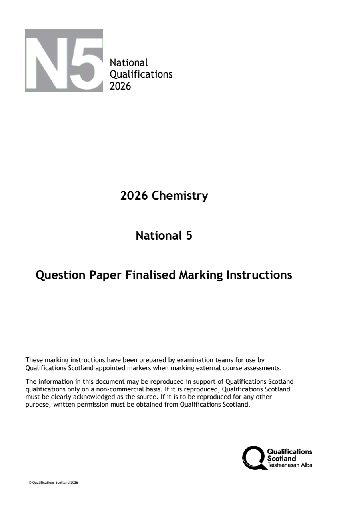
Selectable page text
National
Qualifications
2026
2026 Chemistry
National 5
Question Paper Finalised Marking Instructions
These marking instructions have been prepared by examination teams for use by
Qualifications Scotland appointed markers when marking external course assessments.
The information in this document may be reproduced in support of Qualifications Scotland
qualifications only on a non-commercial basis. If it is reproduced, Qualifications Scotland
must be clearly acknowledged as the source. If it is to be reproduced for any other
purpose, written permission must be obtained from Qualifications Scotland.
© Qualifications Scotland 2026PDF page 2
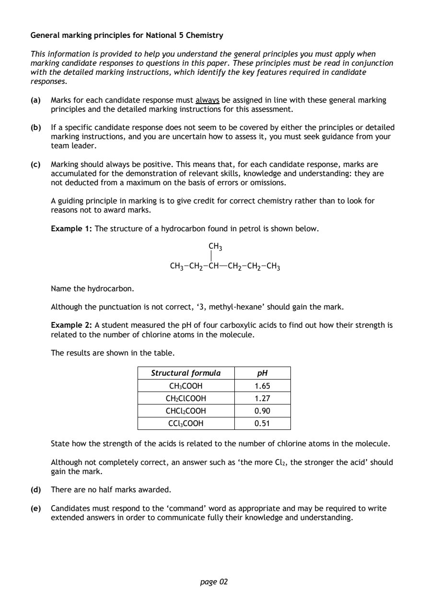
Selectable page text
General marking principles for National 5 Chemistry
This information is provided to help you understand the general principles you must apply when
marking candidate responses to questions in this paper. These principles must be read in conjunction
with the detailed marking instructions, which identify the key features required in candidate
responses.
(a) Marks for each candidate response must always be assigned in line with these general marking
principles and the detailed marking instructions for this assessment.
(b) If a specific candidate response does not seem to be covered by either the principles or detailed
marking instructions, and you are uncertain how to assess it, you must seek guidance from your
team leader.
(c) Marking should always be positive. This means that, for each candidate response, marks are
accumulated for the demonstration of relevant skills, knowledge and understanding: they are
not deducted from a maximum on the basis of errors or omissions.
A guiding principle in marking is to give credit for correct chemistry rather than to look for
reasons not to award marks.
Example 1: The structure of a hydrocarbon found in petrol is shown below.
Name the hydrocarbon.
Although the punctuation is not correct, ‘3, methyl-hexane’ should gain the mark.
Example 2: A student measured the pH of four carboxylic acids to find out how their strength is
related to the number of chlorine atoms in the molecule.
The results are shown in the table.
Structural formula pH
CH₃COOH 1.65
CH₂ClCOOH 1.27
CHCl₂COOH 0.90
CCl₃COOH 0.51
State how the strength of the acids is related to the number of chlorine atoms in the molecule.
Although not completely correct, an answer such as ‘the more Cl₂, the stronger the acid’ should
gain the mark.
(d) There are no half marks awarded.
(e) Candidates must respond to the ‘command’ word as appropriate and may be required to write
extended answers in order to communicate fully their knowledge and understanding.
page 02PDF page 3
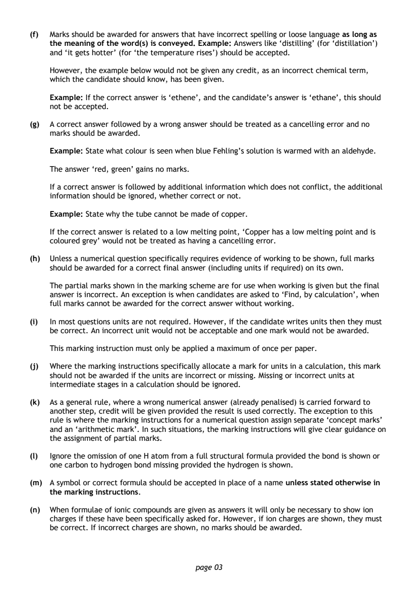
Selectable page text
(f) Marks should be awarded for answers that have incorrect spelling or loose language as long as
the meaning of the word(s) is conveyed. Example: Answers like ‘distilling’ (for ‘distillation’)
and ‘it gets hotter’ (for ‘the temperature rises’) should be accepted.
However, the example below would not be given any credit, as an incorrect chemical term,
which the candidate should know, has been given.
Example: If the correct answer is ‘ethene’, and the candidate’s answer is ‘ethane’, this should
not be accepted.
(g) A correct answer followed by a wrong answer should be treated as a cancelling error and no
marks should be awarded.
Example: State what colour is seen when blue Fehling’s solution is warmed with an aldehyde.
The answer ‘red, green’ gains no marks.
If a correct answer is followed by additional information which does not conflict, the additional
information should be ignored, whether correct or not.
Example: State why the tube cannot be made of copper.
If the correct answer is related to a low melting point, ‘Copper has a low melting point and is
coloured grey’ would not be treated as having a cancelling error.
(h) Unless a numerical question specifically requires evidence of working to be shown, full marks
should be awarded for a correct final answer (including units if required) on its own.
The partial marks shown in the marking scheme are for use when working is given but the final
answer is incorrect. An exception is when candidates are asked to ‘Find, by calculation’, when
full marks cannot be awarded for the correct answer without working.
(i) In most questions units are not required. However, if the candidate writes units then they must
be correct. An incorrect unit would not be acceptable and one mark would not be awarded.
This marking instruction must only be applied a maximum of once per paper.
(j) Where the marking instructions specifically allocate a mark for units in a calculation, this mark
should not be awarded if the units are incorrect or missing. Missing or incorrect units at
intermediate stages in a calculation should be ignored.
(k) As a general rule, where a wrong numerical answer (already penalised) is carried forward to
another step, credit will be given provided the result is used correctly. The exception to this
rule is where the marking instructions for a numerical question assign separate ‘concept marks’
and an ‘arithmetic mark’. In such situations, the marking instructions will give clear guidance on
the assignment of partial marks.
(l) Ignore the omission of one H atom from a full structural formula provided the bond is shown or
one carbon to hydrogen bond missing provided the hydrogen is shown.
(m) A symbol or correct formula should be accepted in place of a name unless stated otherwise in
the marking instructions.
(n) When formulae of ionic compounds are given as answers it will only be necessary to show ion
charges if these have been specifically asked for. However, if ion charges are shown, they must
be correct. If incorrect charges are shown, no marks should be awarded.
page 03PDF page 4
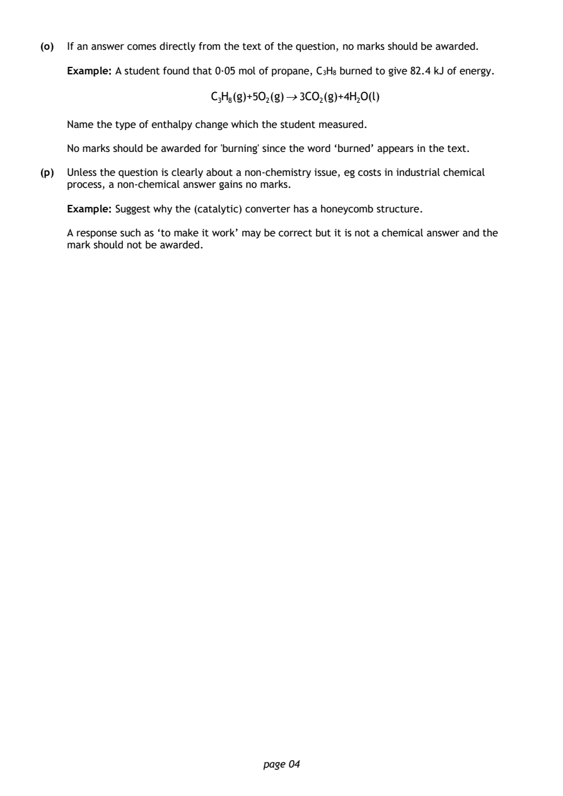
Selectable page text
(o) If an answer comes directly from the text of the question, no marks should be awarded.
Example: A student found that 0·05 mol of propane, C₃H₈ burned to give 82.4 kJ of energy.
C₃H₈(g)+5O₂(g)→3CO₂(g)+4H₂O(l)
Name the type of enthalpy change which the student measured.
No marks should be awarded for 'burning' since the word ‘burned’ appears in the text.
(p) Unless the question is clearly about a non-chemistry issue, eg costs in industrial chemical
process, a non-chemical answer gains no marks.
Example: Suggest why the (catalytic) converter has a honeycomb structure.
A response such as ‘to make it work’ may be correct but it is not a chemical answer and the
mark should not be awarded.
page 04PDF page 5
Paper 1, Question 1Paper 1, Question 2Paper 1, Question 3Paper 1, Question 4Paper 1, Question 5Paper 1, Question 6Paper 1, Question 7Paper 1, Question 8Paper 1, Question 9Paper 1, Question 10Paper 1, Question 11Paper 1, Question 12Paper 1, Question 13Paper 1, Question 14Paper 1, Question 15Paper 1, Question 16Paper 1, Question 17Paper 1, Question 18Paper 1, Question 19Paper 1, Question 20Paper 1, Question 21Paper 1, Question 22Paper 1, Question 23Paper 1, Question 24Paper 1, Question 25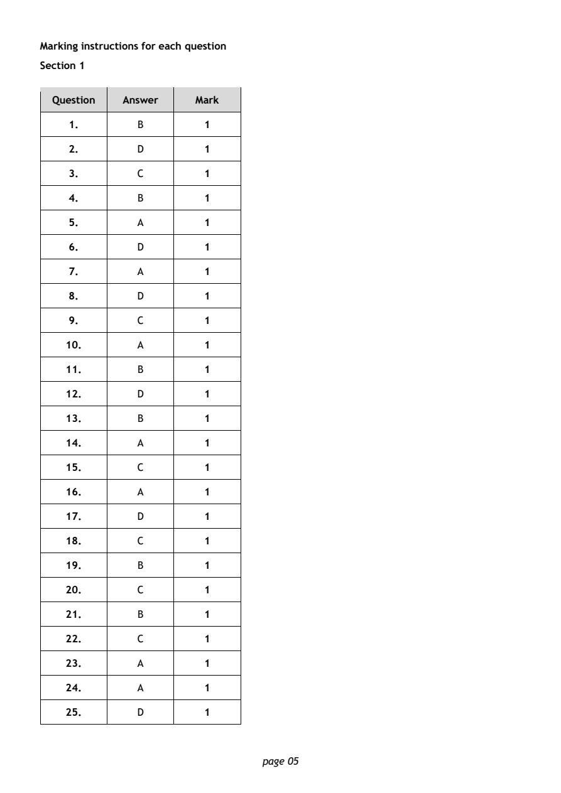
Selectable page text
Marking instructions for each question
Section 1
Question Answer Mark
1. B 1
2. D 1
3. C 1
4. B 1
5. A 1
6. D 1
7. A 1
8. D 1
9. C 1
10. A 1
11. B 1
12. D 1
13. B 1
14. A 1
15. C 1
16. A 1
17. D 1
18. C 1
19. B 1
20. C 1
21. B 1
22. C 1
23. A 1
24. A 1
25. D 1
page 05PDF page 6
Paper 2, Question 1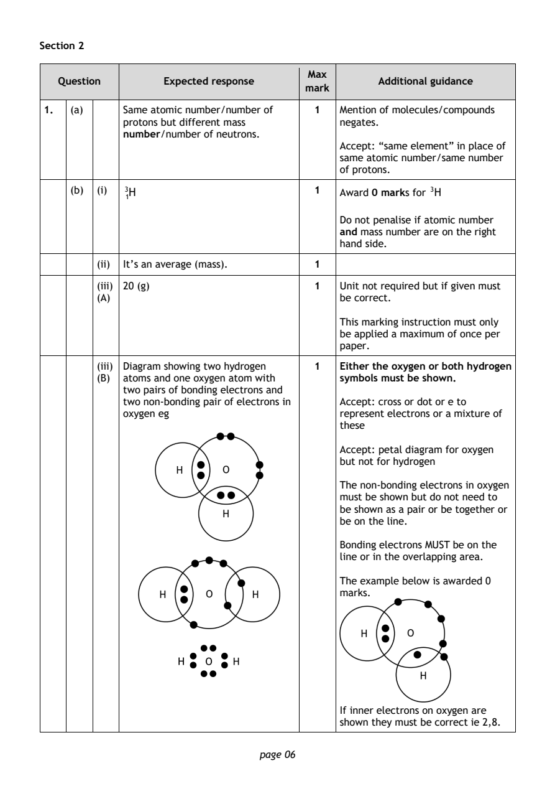
Selectable page text
Section 2
Max
Question Expected response Additional guidance
mark
1. (a) Same atomic number/number of 1 Mention of molecules/compounds
protons but different mass negates.
number/number of neutrons.
Accept: “same element” in place of
same atomic number/same number
of protons.
(b) (i) 3H 1 Award 0 marks for ³H
1
Do not penalise if atomic number
and mass number are on the right
hand side.
(ii) It’s an average (mass). 1
(iii) 20 (g) 1 Unit not required but if given must
(A) be correct.
This marking instruction must only
be applied a maximum of once per
paper.
(iii) Diagram showing two hydrogen 1 Either the oxygen or both hydrogen
(B) atoms and one oxygen atom with symbols must be shown.
two pairs of bonding electrons and
two non-bonding pair of electrons in Accept: cross or dot or e to
oxygen eg represent electrons or a mixture of
these
Accept: petal diagram for oxygen
but not for hydrogen
The non-bonding electrons in oxygen
must be shown but do not need to
be shown as a pair or be together or
be on the line.
Bonding electrons MUST be on the
line or in the overlapping area.
The example below is awarded 0
marks.
If inner electrons on oxygen are
shown they must be correct ie 2,8.
page 06PDF page 7
Paper 2, Question 2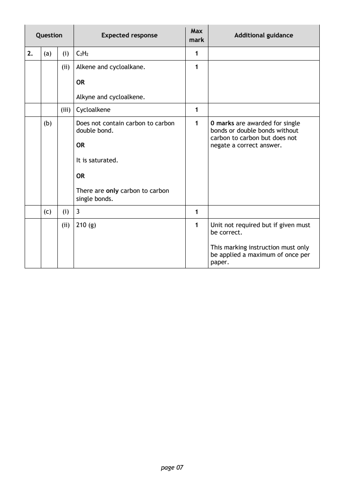
Selectable page text
Max
Question Expected response Additional guidance
mark
2. (a) (i) C₂H₂ 1
(ii) Alkene and cycloalkane. 1
OR
Alkyne and cycloalkene.
(iii) Cycloalkene 1
(b) Does not contain carbon to carbon 1 0 marks are awarded for single
double bond. bonds or double bonds without
carbon to carbon but does not
OR negate a correct answer.
It is saturated.
OR
There are only carbon to carbon
single bonds.
(c) (i) 3 1
(ii) 210 (g) 1 Unit not required but if given must
be correct.
This marking instruction must only
be applied a maximum of once per
paper.
page 07PDF page 8
Paper 2, Question 3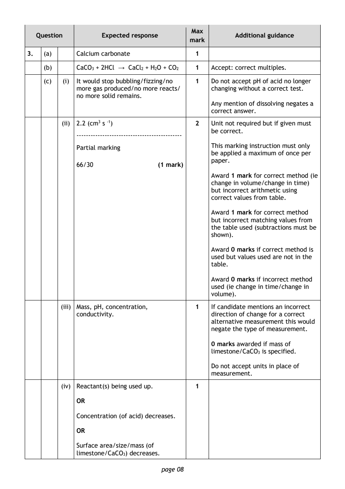
Selectable page text
Max
Question Expected response Additional guidance
mark
3. (a) Calcium carbonate 1
(b) CaCO₃ + 2HCl → CaCl₂ + H₂O + CO₂ 1 Accept: correct multiples.
(c) (i) It would stop bubbling/fizzing/no 1 Do not accept pH of acid no longer
more gas produced/no more reacts/ changing without a correct test.
no more solid remains.
Any mention of dissolving negates a
correct answer.
(ii) 2.2 (cm³ s ⁻¹) 2 Unit not required but if given must
be correct.
---------------------------------------------
This marking instruction must only
Partial marking
be applied a maximum of once per
paper.
66/30 (1 mark)
Award 1 mark for correct method (ie
change in volume/change in time)
but incorrect arithmetic using
correct values from table.
Award 1 mark for correct method
but incorrect matching values from
the table used (subtractions must be
shown).
Award 0 marks if correct method is
used but values used are not in the
table.
Award 0 marks if incorrect method
used (ie change in time/change in
volume).
(iii) Mass, pH, concentration, 1 If candidate mentions an incorrect
conductivity. direction of change for a correct
alternative measurement this would
negate the type of measurement.
0 marks awarded if mass of
limestone/CaCO₃ is specified.
Do not accept units in place of
measurement.
(iv) Reactant(s) being used up. 1
OR
Concentration (of acid) decreases.
OR
Surface area/size/mass (of
limestone/CaCO₃) decreases.
page 08PDF page 9
Paper 2, Question 4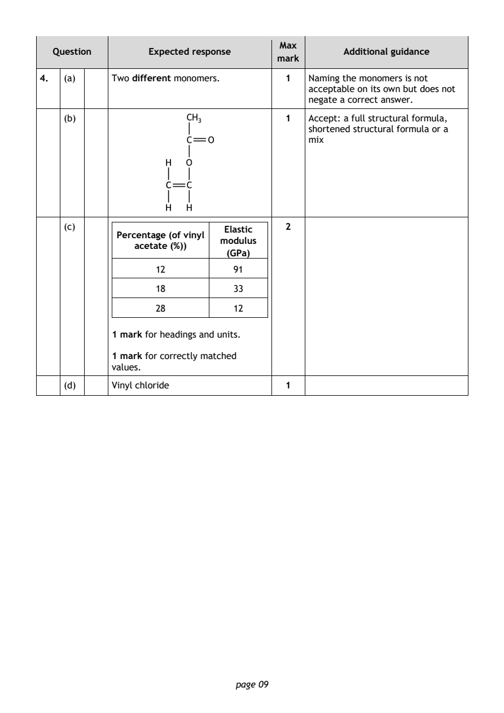
Selectable page text
Max
Question Expected response Additional guidance
mark
4. (a) Two different monomers. 1 Naming the monomers is not
acceptable on its own but does not
negate a correct answer.
(b) 1 Accept: a full structural formula,
shortened structural formula or a
mix
(c) 2
Elastic
Percentage (of vinyl
modulus
acetate (%))
(GPa)
12 91
18 33
28 12
1 mark for headings and units.
1 mark for correctly matched
values.
(d) Vinyl chloride 1
page 09PDF page 10
Paper 2, Question 5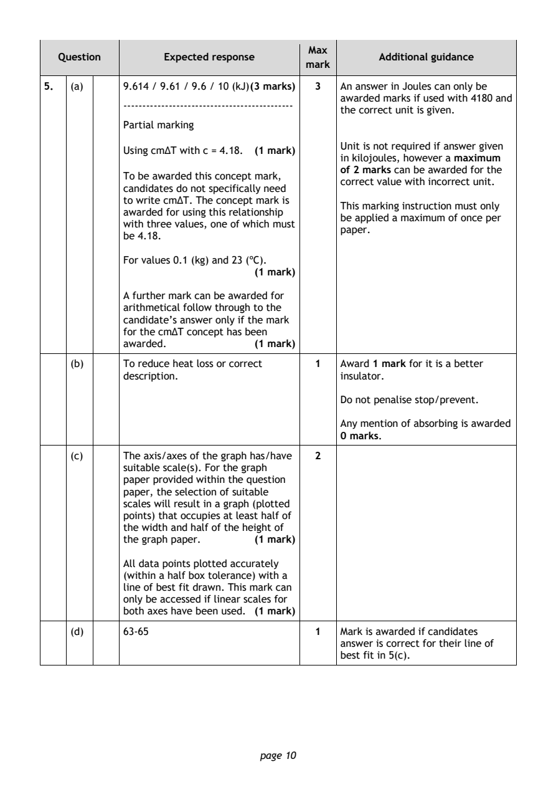
Selectable page text
Max
Question Expected response Additional guidance
mark
5. (a) 9.614 / 9.61 / 9.6 / 10 (kJ) (3 marks) 3 An answer in Joules can only be
awarded marks if used with 4180 and
---------------------------------------------
the correct unit is given.
Partial marking
Unit is not required if answer given
Using cmΔT with c = 4.18. (1 mark)
in kilojoules, however a maximum
of 2 marks can be awarded for the
To be awarded this concept mark,
correct value with incorrect unit.
candidates do not specifically need
to write cmΔT. The concept mark is
This marking instruction must only
awarded for using this relationship
be applied a maximum of once per
with three values, one of which must
paper.
be 4.18.
For values 0.1 (kg) and 23 (ºC).
(1 mark)
A further mark can be awarded for
arithmetical follow through to the
candidate’s answer only if the mark
for the cmΔT concept has been
awarded. (1 mark)
(b) To reduce heat loss or correct 1 Award 1 mark for it is a better
description. insulator.
Do not penalise stop/prevent.
Any mention of absorbing is awarded
0 marks.
(c) The axis/axes of the graph has/have 2
suitable scale(s). For the graph
paper provided within the question
paper, the selection of suitable
scales will result in a graph (plotted
points) that occupies at least half of
the width and half of the height of
the graph paper. (1 mark)
All data points plotted accurately
(within a half box tolerance) with a
line of best fit drawn. This mark can
only be accessed if linear scales for
both axes have been used. (1 mark)
(d) 63-65 1 Mark is awarded if candidates
answer is correct for their line of
best fit in 5(c).
page 10PDF page 11
Paper 2, Question 6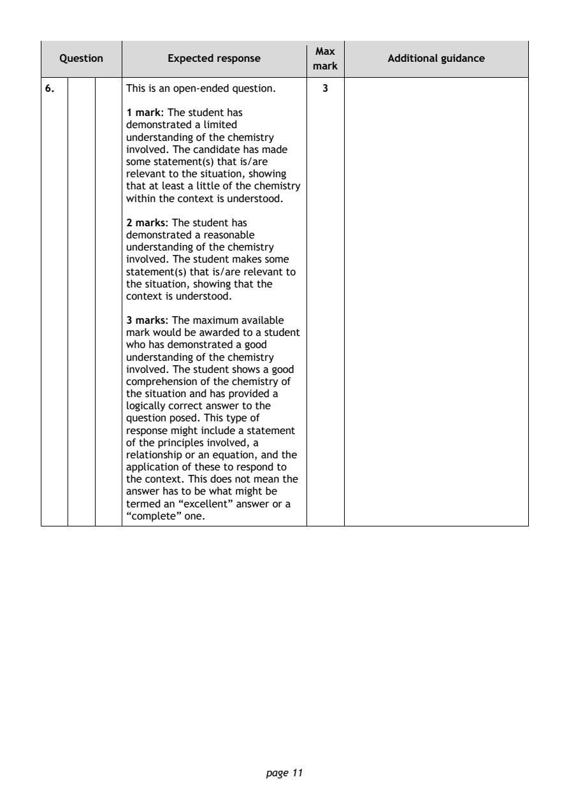
Selectable page text
Max
Question Expected response Additional guidance
mark
6. This is an open-ended question. 3
1 mark: The student has
demonstrated a limited
understanding of the chemistry
involved. The candidate has made
some statement(s) that is/are
relevant to the situation, showing
that at least a little of the chemistry
within the context is understood.
2 marks: The student has
demonstrated a reasonable
understanding of the chemistry
involved. The student makes some
statement(s) that is/are relevant to
the situation, showing that the
context is understood.
3 marks: The maximum available
mark would be awarded to a student
who has demonstrated a good
understanding of the chemistry
involved. The student shows a good
comprehension of the chemistry of
the situation and has provided a
logically correct answer to the
question posed. This type of
response might include a statement
of the principles involved, a
relationship or an equation, and the
application of these to respond to
the context. This does not mean the
answer has to be what might be
termed an “excellent” answer or a
“complete” one.
page 11PDF page 12
Paper 2, Question 7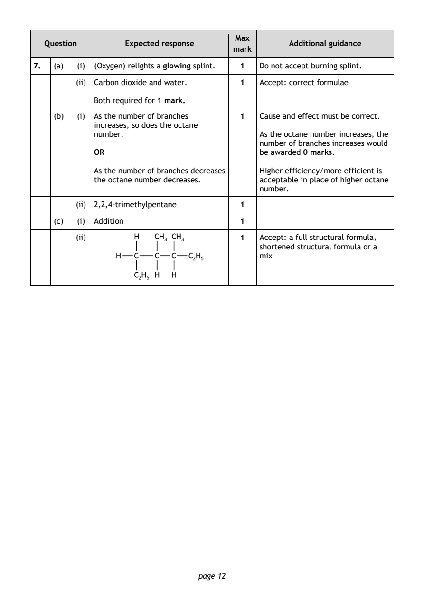
Selectable page text
Max
Question Expected response Additional guidance
mark
7. (a) (i) (Oxygen) relights a glowing splint. 1 Do not accept burning splint.
(ii) Carbon dioxide and water. 1 Accept: correct formulae
Both required for 1 mark.
(b) (i) As the number of branches 1 Cause and effect must be correct.
increases, so does the octane
number. As the octane number increases, the
number of branches increases would
OR be awarded 0 marks.
As the number of branches decreases Higher efficiency/more efficient is
the octane number decreases. acceptable in place of higher octane
number.
(ii) 2,2,4-trimethylpentane 1
(c) (i) Addition 1
(ii) 1 Accept: a full structural formula,
shortened structural formula or a
mix
page 12PDF page 13
Paper 2, Question 8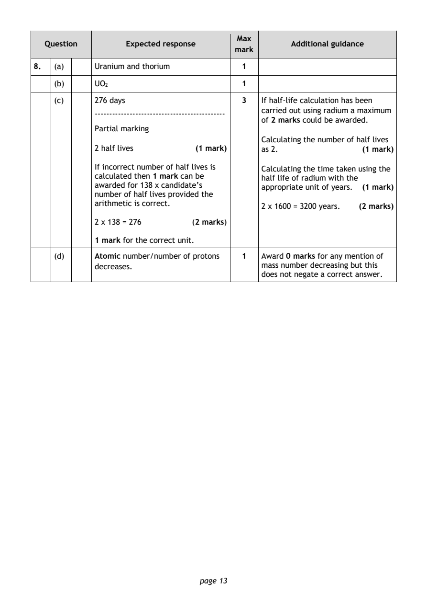
Selectable page text
Max
Question Expected response Additional guidance
mark
8. (a) Uranium and thorium 1
(b) UO₂ 1
(c) 276 days 3 If half-life calculation has been
carried out using radium a maximum
---------------------------------------------
of 2 marks could be awarded.
Partial marking
Calculating the number of half lives
2 half lives (1 mark) as 2. (1 mark)
If incorrect number of half lives is Calculating the time taken using the
calculated then 1 mark can be half life of radium with the
awarded for 138 x candidate’s appropriate unit of years. (1 mark)
number of half lives provided the
arithmetic is correct.
2 x 1600 = 3200 years. (2 marks)
2 x 138 = 276 (2 marks)
1 mark for the correct unit.
(d) Atomic number/number of protons 1 Award 0 marks for any mention of
decreases. mass number decreasing but this
does not negate a correct answer.
page 13PDF page 14
Paper 2, Question 9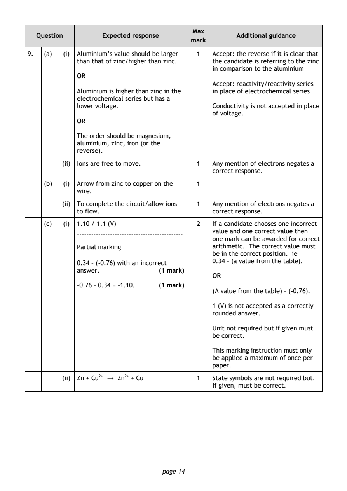
Selectable page text
Max
Question Expected response Additional guidance
mark
9. (a) (i) Aluminium’s value should be larger 1 Accept: the reverse if it is clear that
than that of zinc/higher than zinc. the candidate is referring to the zinc
in comparison to the aluminium
OR
Accept: reactivity/reactivity series
Aluminium is higher than zinc in the in place of electrochemical series
electrochemical series but has a
lower voltage. Conductivity is not accepted in place
of voltage.
OR
The order should be magnesium,
aluminium, zinc, iron (or the
reverse).
(ii) Ions are free to move. 1 Any mention of electrons negates a
correct response.
(b) (i) Arrow from zinc to copper on the 1
wire.
(ii) To complete the circuit/allow ions 1 Any mention of electrons negates a
to flow. correct response.
(c) (i) 1.10 / 1.1 (V) 2 If a candidate chooses one incorrect
value and one correct value then
---------------------------------------------
one mark can be awarded for correct
Partial marking arithmetic. The correct value must
be in the correct position. ie
0.34 – (-0.76) with an incorrect 0.34 – (a value from the table).
answer. (1 mark)
OR
-0.76 – 0.34 = -1.10. (1 mark)
(A value from the table) – (-0.76).
1 (V) is not accepted as a correctly
rounded answer.
Unit not required but if given must
be correct.
This marking instruction must only
be applied a maximum of once per
paper.
(ii) Zn + Cu²⁺ → Zn²⁺ + Cu 1 State symbols are not required but,
if given, must be correct.
page 14PDF page 15
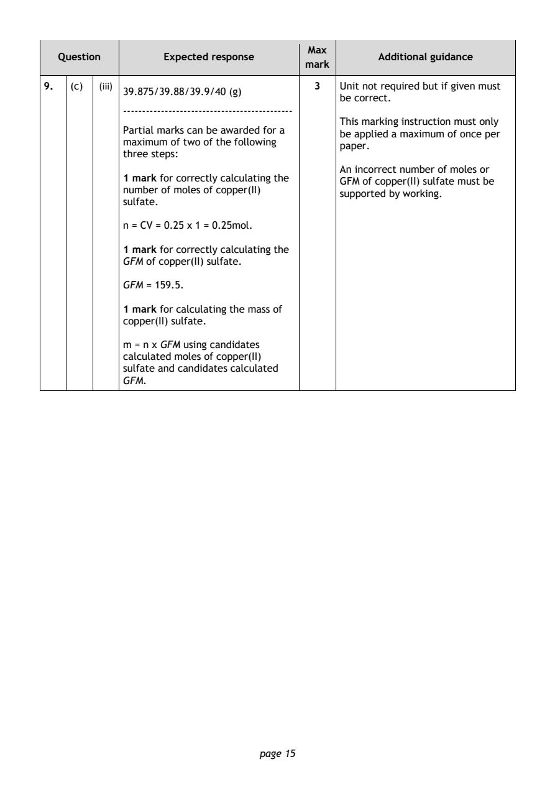
Selectable page text
Max
Question Expected response Additional guidance
mark
9. (c) (iii) 3 Unit not required but if given must
39.875/39.88/39.9/40 (g)
be correct.
---------------------------------------------
This marking instruction must only
Partial marks can be awarded for a
be applied a maximum of once per
maximum of two of the following
paper.
three steps:
An incorrect number of moles or
1 mark for correctly calculating the
GFM of copper(II) sulfate must be
number of moles of copper(II)
supported by working.
sulfate.
n = CV = 0.25 x 1 = 0.25mol.
1 mark for correctly calculating the
GFM of copper(II) sulfate.
GFM = 159.5.
1 mark for calculating the mass of
copper(II) sulfate.
m = n x GFM using candidates
calculated moles of copper(II)
sulfate and candidates calculated
GFM.
page 15PDF page 16
Paper 2, Question 10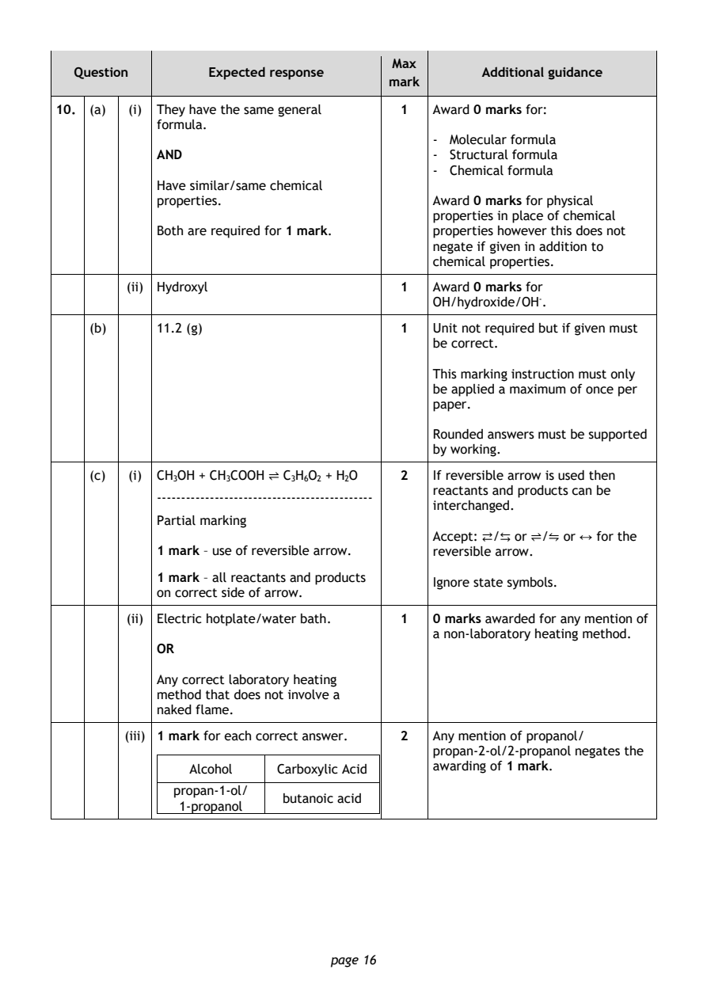
Selectable page text
Max
Question Expected response Additional guidance
mark
10. (a) (i) They have the same general 1 Award 0 marks for:
formula.
- Molecular formula
AND - Structural formula
- Chemical formula
Have similar/same chemical
properties. Award 0 marks for physical
properties in place of chemical
Both are required for 1 mark. properties however this does not
negate if given in addition to
chemical properties.
(ii) Hydroxyl 1 Award 0 marks for
OH/hydroxide/OH⁻.
(b) 11.2 (g) 1 Unit not required but if given must
be correct.
This marking instruction must only
be applied a maximum of once per
paper.
Rounded answers must be supported
by working.
(c) (i) CH₃OH + CH₃COOH ⇌ C₃H₆O₂ + H₂O 2 If reversible arrow is used then
reactants and products can be
---------------------------------------------
interchanged.
Partial marking
Accept: ⇄/⇆ or ⇌/⇋ or ↔ for the
1 mark – use of reversible arrow. reversible arrow.
1 mark – all reactants and products
Ignore state symbols.
on correct side of arrow.
(ii) Electric hotplate/water bath. 1 0 marks awarded for any mention of
a non-laboratory heating method.
OR
Any correct laboratory heating
method that does not involve a
naked flame.
(iii) 1 mark for each correct answer. 2 Any mention of propanol/
propan-2-ol/2-propanol negates the
Alcohol Carboxylic Acid awarding of 1 mark.
propan-1-ol/
butanoic acid
1-propanol
page 16PDF page 17
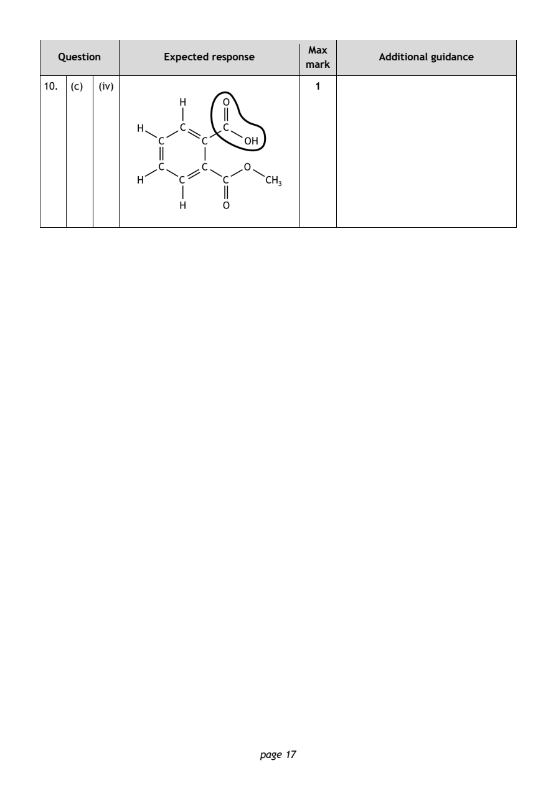
Selectable page text
Max
Question Expected response Additional guidance
mark
10. (c) (iv) 1
page 17PDF page 18
Paper 2, Question 11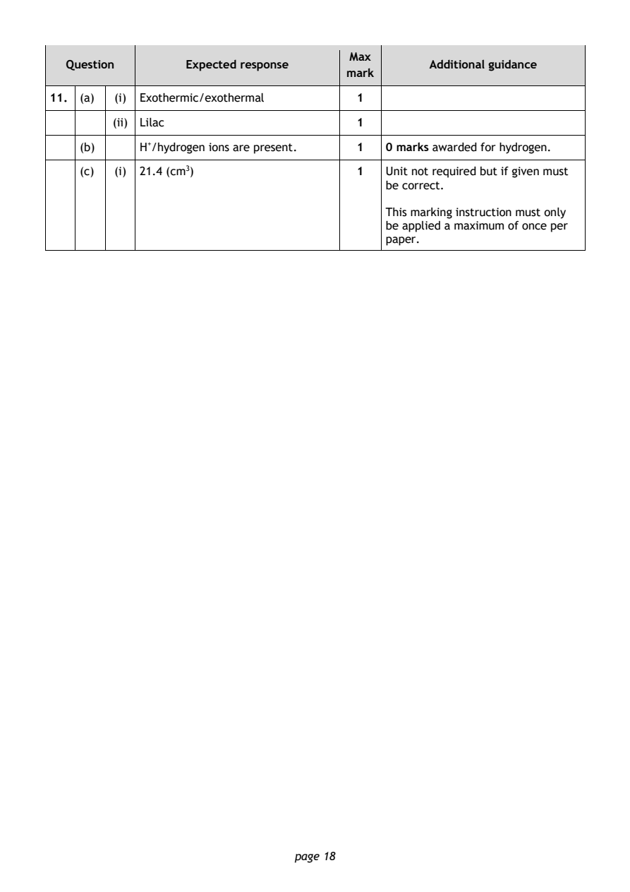
Selectable page text
Max
Question Expected response Additional guidance
mark
11. (a) (i) Exothermic/exothermal 1
(ii) Lilac 1
(b) H⁺/hydrogen ions are present. 1 0 marks awarded for hydrogen.
(c) (i) 21.4 (cm³) 1 Unit not required but if given must
be correct.
This marking instruction must only
be applied a maximum of once per
paper.
page 18PDF page 19
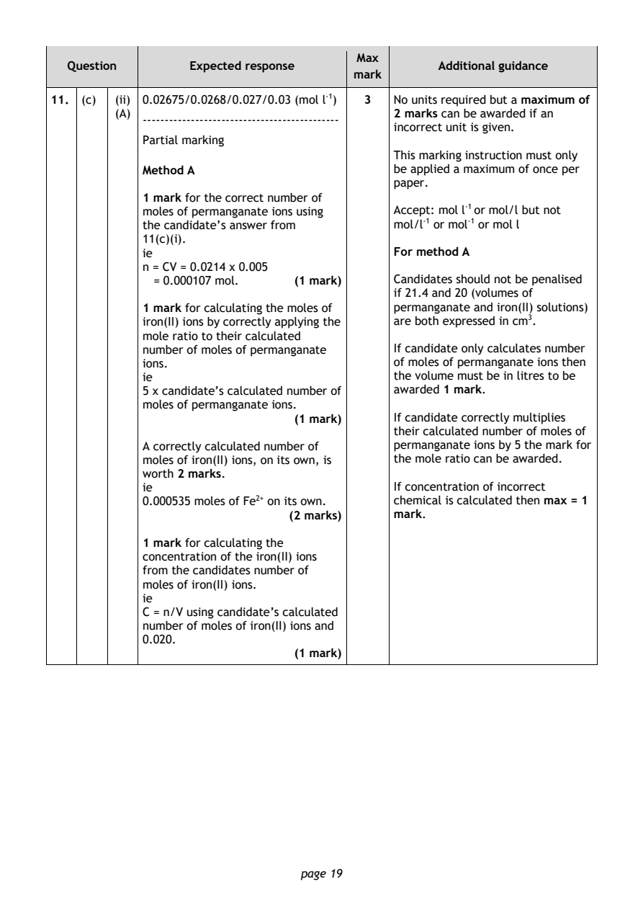
Selectable page text
Max
Question Expected response Additional guidance
mark
11. (c) (ii) 0.02675/0.0268/0.027/0.03 (mol l⁻¹) 3 No units required but a maximum of
(A) 2 marks can be awarded if an
---------------------------------------------
incorrect unit is given.
Partial marking
This marking instruction must only
Method A be applied a maximum of once per
paper.
1 mark for the correct number of
moles of permanganate ions using Accept: mol l⁻¹ or mol/l but not
the candidate’s answer from mol/l⁻¹ or mol⁻¹ or mol l
11(c)(i).
ie For method A
n = CV = 0.0214 x 0.005
= 0.000107 mol. (1 mark) Candidates should not be penalised
if 21.4 and 20 (volumes of
1 mark for calculating the moles of permanganate and iron(II) solutions)
iron(II) ions by correctly applying the are both expressed in cm³.
mole ratio to their calculated
number of moles of permanganate If candidate only calculates number
ions. of moles of permanganate ions then
ie the volume must be in litres to be
5 x candidate’s calculated number of awarded 1 mark.
moles of permanganate ions.
(1 mark) If candidate correctly multiplies
their calculated number of moles of
A correctly calculated number of permanganate ions by 5 the mark for
moles of iron(II) ions, on its own, is the mole ratio can be awarded.
worth 2 marks.
ie If concentration of incorrect
0.000535 moles of Fe²⁺ on its own. chemical is calculated then max = 1
(2 marks) mark.
1 mark for calculating the
concentration of the iron(II) ions
from the candidates number of
moles of iron(II) ions.
ie
C = n/V using candidate’s calculated
number of moles of iron(II) ions and
0.020.
(1 mark)
page 19PDF page 20
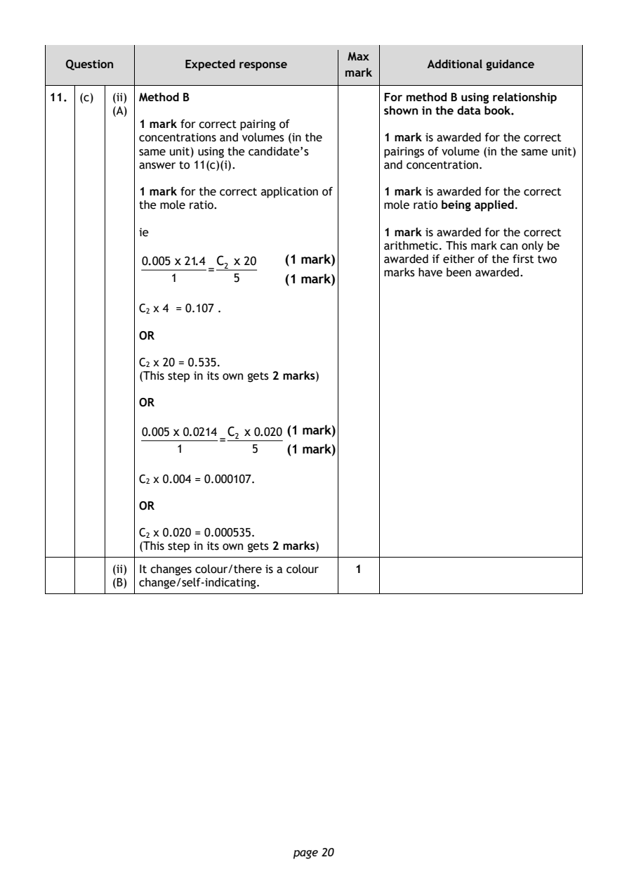
Selectable page text
Max
Question Expected response Additional guidance
mark
11. (c) (ii) Method B For method B using relationship
(A) shown in the data book.
1 mark for correct pairing of
concentrations and volumes (in the 1 mark is awarded for the correct
same unit) using the candidate’s pairings of volume (in the same unit)
answer to 11(c)(i). and concentration.
1 mark for the correct application of 1 mark is awarded for the correct
the mole ratio. mole ratio being applied.
ie 1 mark is awarded for the correct
arithmetic. This mark can only be
0.005 x 21.4 C₂ x 20 (1 mark) awarded if either of the first two
=
marks have been awarded.
1 5 (1 mark)
C₂ x 4 = 0.107 .
OR
C₂ x 20 = 0.535.
(This step in its own gets 2 marks)
OR
0.005 x 0.0214 C₂ x 0.020 (1 mark)
=
1 5 (1 mark)
C₂ x 0.004 = 0.000107.
OR
C₂ x 0.020 = 0.000535.
(This step in its own gets 2 marks)
(ii) It changes colour/there is a colour 1
(B) change/self-indicating.
page 20PDF page 21
Paper 2, Question 12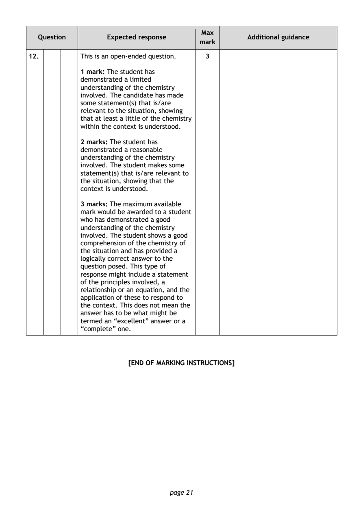
Selectable page text
Max
Question Expected response Additional guidance
mark
12. This is an open-ended question. 3
1 mark: The student has
demonstrated a limited
understanding of the chemistry
involved. The candidate has made
some statement(s) that is/are
relevant to the situation, showing
that at least a little of the chemistry
within the context is understood.
2 marks: The student has
demonstrated a reasonable
understanding of the chemistry
involved. The student makes some
statement(s) that is/are relevant to
the situation, showing that the
context is understood.
3 marks: The maximum available
mark would be awarded to a student
who has demonstrated a good
understanding of the chemistry
involved. The student shows a good
comprehension of the chemistry of
the situation and has provided a
logically correct answer to the
question posed. This type of
response might include a statement
of the principles involved, a
relationship or an equation, and the
application of these to respond to
the context. This does not mean the
answer has to be what might be
termed an “excellent” answer or a
“complete” one.
[END OF MARKING INSTRUCTIONS]
page 21